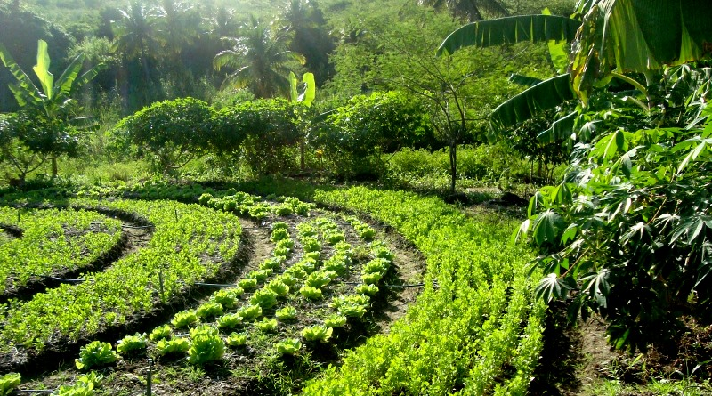

Intro
A InovaGeo é uma empresa comprometida com soluções inovadoras e sustentáveis nas áreas ambiental e agrícola. Nossa missão é contribuir para a transição do seu negócio em direção a práticas mais verdes e ecológicas. Para isso, integramos estudos acadêmicos, técnicas de produção sustentável e tecnologias emergentes no mercado, criando soluções personalizadas que atendam às suas necessidades.
Produtos
Oferecemos soluções ambientais e de geoprocessamento personalizadas de todos os tipos. Adaptamos modelos agrícolas de produção, em diferentes contextos. Auxiliamos com o processamento de imagens usando IA e algoritmos, oferecemos sites com mapas interativos que facilitam o planejamento de tomadores de decisões. Também colaboramos pesquisadores, e instituições acadêmicas, oferecendo suporte especializado.